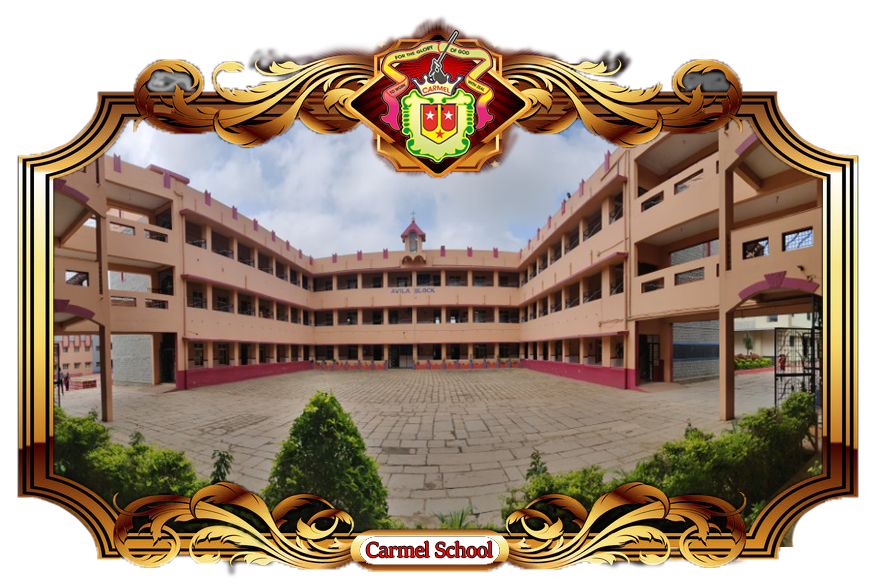

HOME:
Home page
ABOUT US:
about us
EVENTS
Event and Photo Gallery
Carmel Convent Sr. Sec. School is such a school that has been established to provide your child with ample opportunities to grow and progress in modern and scientific way. The school is situated near the C.R.P.F. campus near Revenue colony , Neemuch ( M.P.) has its head quarter in Kerala and its run by the sisters of the "Congregation of Teresian Carmelites" ( C.T.C.) which was founded on 13th February, 1866 by Servant of God, Mother Eliswa. There are 1330 sisters working in 186 convents in India and Italy, Germany, America, Africa & Ruwanda. Carmel Convent Sr. Sec. School, comes under the jurisdiction of Jhabua diocese and it was founded in 1981. There are 4000 + students studying from Nursery to class XII with 125 teaching and non teaching staff.
ART & CRAFT ZONE
Here are the top 10 ways that the art helps kids to learn and grow:-
Develops creativity
Improves Academic Performance
Hone Motor Skills
Boosts Confidence
Sharpens Visual Learning
Strengthen Decision Making
Mind set for Perseverance
Focuses Innovation
Shares Responsibilities
Self Dependence
We are providing the Art Education from classes I to X and focus on work education for classes XI and XII as per Board standards.
SPORTS
Educational Value of:-Games and Sports
The importance of sports and games in school encompasses more than just the benefit of physical activity. Increases in self-esteem and mental alertness make school sports and games necessary for every school age child. Sports give us physical fitness, courage endurance, cooperation and team spirit. The players are more disciplined and fit than others. Sports and games along with education prepare us to stand up and face the challenges of life. The teaching of sacrifice is of great social and national interest.With faith in equality and justice, it enables us to take defeat and victory in a cheerful spirit.
Facilities Available in School Premises :-
Foot Ball
Volley Ball
Cricket
Hand Ball
Table Tennis
Basket Ball
Badminton
Chess
Athletics
Tender Carmelites are sporty :-
Excercise is an added fresh way to get physical and mental excercise with a fresh move.
Following sports are being conducted to exert one's strenth to push and pull the Carmelites .
Flexibility and balancing
Football
Kho-Kho
Basketball
Dodge ball
Change the ring

VISION & MISSION
Vision and Mission :- Child is and should be the most ambitious dream in a parent's life because he / she is their real future. Even the most successful people will feel disappointed with life, if their children don't grow up to be a successful men and women. The entire future of an individual , the family and the society depends upon how a child's growth and developments take place.
ACADEMICS
Academics :- Carmel Convent Sr. Sec. School, Neemuch, amelioration is a kernel of education for Carmelites. Carmelites commitments to be bigger and better in quality education motivate them to be a constant learner with insight. Here, the members clarify their doubts and queries regarding the text and prepare them to appear for examination, complete their sets of homework without any fear or phobia. Evaluation of caliber is based on verbal, Viva, project work, activities, assignment and written work. Rubrics of all activities are equally important to evaluate the potential of a student in an accurate way.
